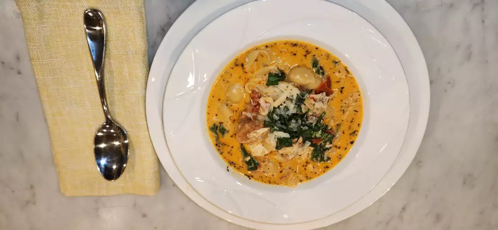
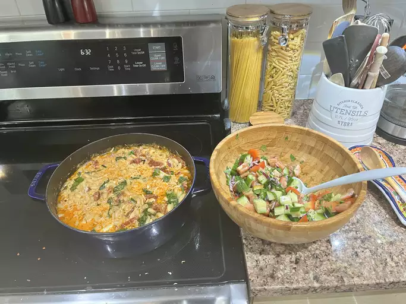
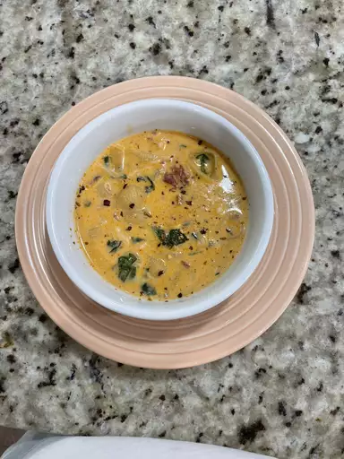

Marry Me Chicken Soup
Soup so good, you'll want to marry the chef!
Marry Me Chicken Soup is a delightful bowl of sautèed chicken, blanketed in a creamy sun-dried tomato sauce!
Its best enjoyed on its own or served on a bed of rice or pasta. Your choice!
Ingredients
- 1/2 cup drained julienne-cut-sun-dried-tomatoes
packed in oil with herbs(from 1[8.5 ounce] jar)
- 1 tablespoon oil from sun-dried-tomato jar, divided
- 1 1/2 cups chopped (1/4 inch) yellow onion
(from 1 medium [8 ounce] onion)
- 4 medium garlic cloves, minced (about 4 teaspoons)
- 3 tablespoons tomato paste
- 2(32-ounce) packages chicken broth (8 cups)
- 1 cup heavy whipping cream
- 4 teaspoons chopped fresh basil, plus more garnish (optional)
- 1 teaspoon garlic powder
- 1/4 teaspoon crushed red pepper, plus more for garnish
- 8 ounces uncooked medium shell pasta (about 3 cups)
- 3 cups (3 ounces) packed roughlt chopped fresh baby spinach
- 8 ounces cream cheese, cubed, at room temperature (about 1 cup)
- 1 1/2 ounces Parmesan cheese, finely shredded (about 1/2 cup),
plus more for garnish
Directions
- Gather all the ingredients
- Heat oil from sun-dried tomatoes in a large Dutch oven over
medium until shimmerin. Add onion and garlic; stirring
often, until softened, 3 to 4 minutes.
- Add tomato past and sun-dried tomatos; cook, stirring
constantly, until tomato paste is slightly deeper red in color, about
2 minutes
- Stir in broth, cream, salt, Italian seasoning, garlic powder,
and crushed red pepper; bring to a boil over medium, stirring
occasionally, about 12 minutes.
- Add pasta and reduce heat to medium-low; cook, stirring
occasionally, until pasta is al dente, about 12 minutes.
- Reduce heat to low, and add spinach, chicken, cream cheese, and
Parmesan; cook, stirring often, until cream chesse and Parmesan
are melted and chicken is heated through, about 5 minutes.
- Garnish with additional Parmesan, basil, and red pepper. Serve immediately.
Share Your Own!


